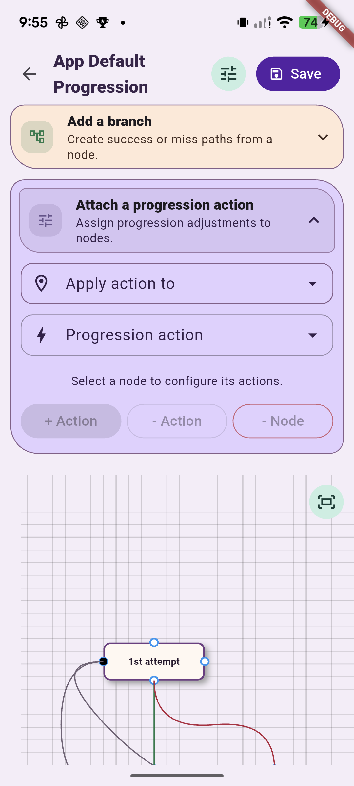
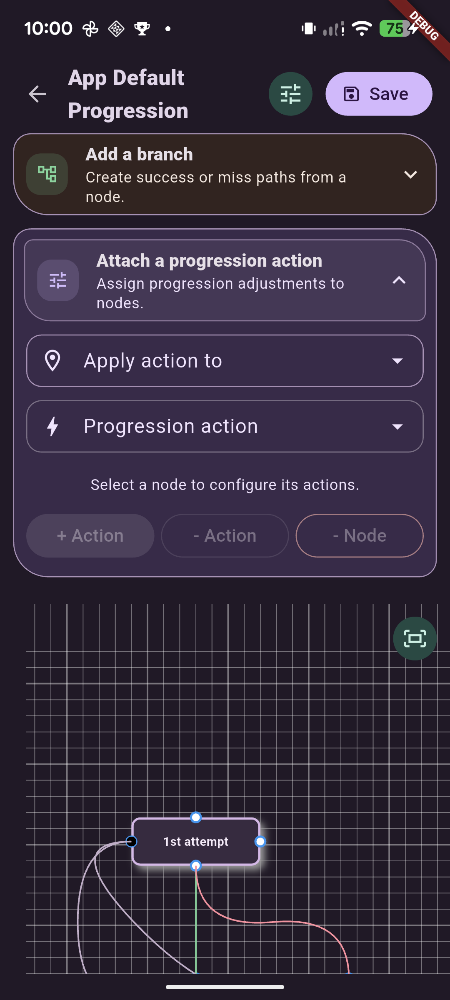
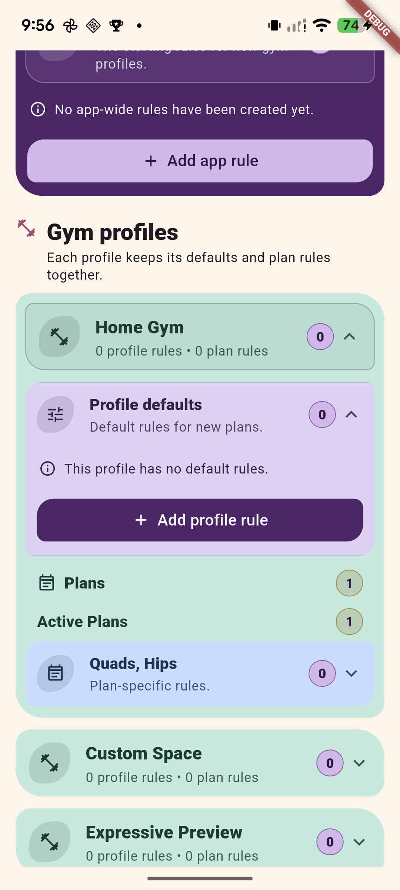
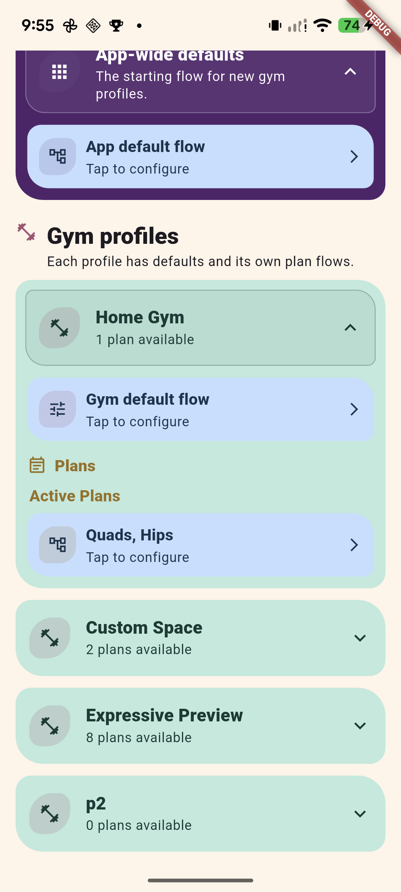
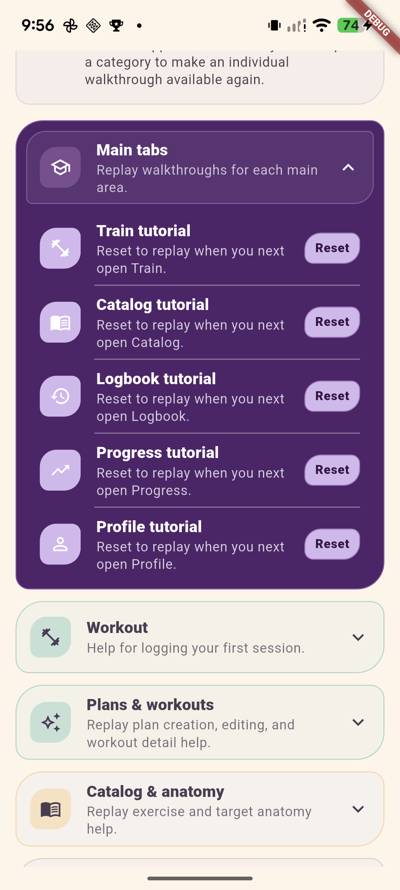
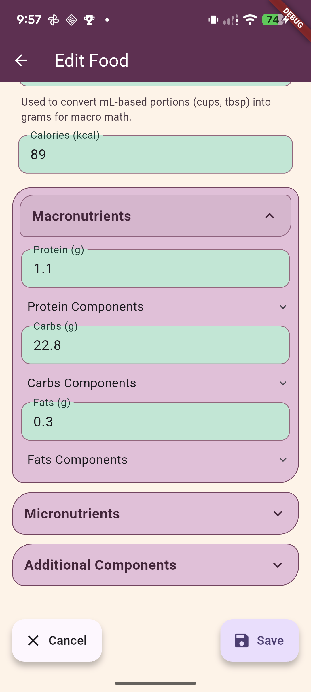
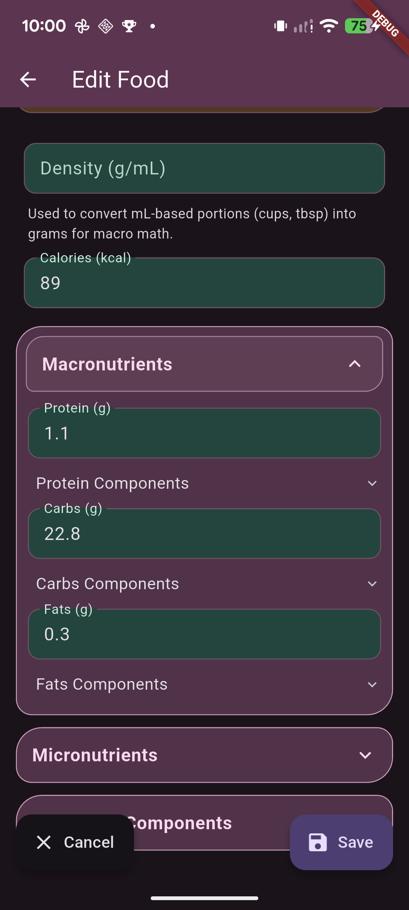

Tonos Expressive - accordion finishing pass
Current Pixel 7 captures after the header geometry, alignment, Rules chevrons, Tutorials dividers and Food floating-action corrections. These supersede the earlier comparison's “after” design. The original before-and-after comparison remains a historical snapshot. Click an image for its full-size capture.
All five areas were checked on the device in light mode, with additional dark-mode checks for Progression and Food. Other dark-mode and larger-text coverage comes from focused widget checks. These captures do not grant visual approval or release qualification.
Plan Progression editor




Workout Progress Rules / Flow Methods


Workout Progress Flows


Guided Tutorials


Edit Food



